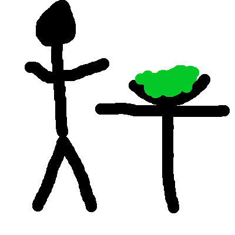
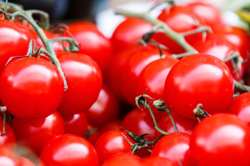

How does one make a salad? What affect do they have on their environment? What is a salad, anyways? We attempt to answer these questions below.
Our sources tell us that this is a salad. Legend says that it is made when dirt and water mix together. And seeing as brown and blue make green when mixed, I buy it. However, we wanted to know more about this strange phenomenon, so we dug deaper
It turns out the primary component of salad is leaves! Who would have thought? This raises more questions than it answers? Are trees involved in the manufacturing of salads? If so, to what extent? And more importantly, to what end? At this point in our investigation, this project turned from something we were phoning in for the ad revenue, to a full on mission, where lives were potentially at risk. So we armed ourselves, and prepared for the worst
What we learned about salads was disturbing. As it turns out, you are supposed to eat them. And then a short while later, you die! This very thing happened to our friend, Camisa Roja! Below is a graphical representation of poor Camisa's fate. Be warned, the following images may be too graphic for young audiences.
SALADS ARE DEADLY! AVOID AT ALL COSTS! SERIOUSLY! THEY WILL KILL YOU! THEY TOOK OUR BUDDY CAMISA, AND THEY ARE COMING FOR YOU NEXT! IF YOU NEED A SNACK, HAVE A NICE TOMATO INSTEAD! HERE, WE WILL EVEN GIVE YOU A TOMATO! TAKE ALL OF THESE! JUST PLEASE DON'T EAT A SALAD!
